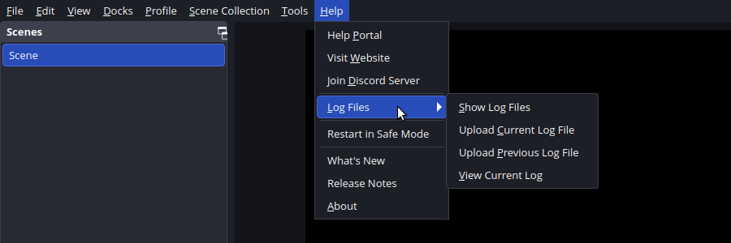

Linux help · Updated September 6, 2026
Install VDO.Ninja in OBS on Linux
A step-by-step guide for Ubuntu users, including what to do when OBS says the plugin failed to load.
Already seeing an error? Start with “Plugin failed to load”. You do not need to reinstall OBS or upgrade Ubuntu to collect the information we need.
1. Identify your OBS installation
Open OBS and choose Help → About to see its version. The version number alone does not tell you whether it is native, Snap or Flatpak.
| Installation | What to do |
|---|---|
| Native Ubuntu package / OBS PPA | Continue if OBS is 32.2.x and your computer is x86-64. |
| Snap from Ubuntu App Center | Do not use this archive as a Snap plugin installer. See Snap and duplicate shortcuts. |
| Flatpak / Flathub | This archive is not a Flatpak package. Switching to Flatpak alone does not make it compatible. |
| Another distribution or ARM computer | Do not assume this Ubuntu x86-64 binary will work. Consult the installation reference for other packaging/build options. |
Check from Terminal
Press Ctrl+Alt+T on Ubuntu. Copy only the lines inside the box, without a terminal prompt such as $. These commands only display information. “Not found” or “not installed” is useful information too.
uname -m
type -a obs obs-studio
obs --version
snap list obs-studio
flatpak info com.obsproject.StudioFor this download, look for x86_64 and OBS 32.2.x. A path under /snap/ indicates Snap. If several installations appear, use the running-process check below to identify the one you actually opened.
I need to install native OBS on Ubuntu
The OBS Project provides an Ubuntu PPA. These commands add that software source and install OBS; they change your system and require your Ubuntu password.
sudo add-apt-repository ppa:obsproject/obs-studio
sudo apt update
sudo apt install obs-studio
obs --versionVerify the resulting version before installing the plugin: a PPA may offer a newer version over time. Ubuntu 24.04’s stock OBS 30.0.2 is too old for this archive. If OBS itself will not launch, run obs in Terminal and share the error before adding the plugin. Do not repeatedly remove your OBS configuration.
2. Download and install
- Close OBS.
- Open the latest release. Under Assets, download obs-vdoninja-linux-x86_64.tar.gz. This is the Linux archive.
- In Files, right-click the download and choose Extract or Extract Here. Open the extracted folder containing
install.shanduninstall.sh. - Right-click an empty area in that folder and choose Open in Terminal. Run the commands below.
chmod +x install.sh
sudo ./install.shsudo asks for your Ubuntu login password. Terminal normally shows no dots or characters as you type it; press Enter when finished. This installs for the system. Keep the extracted folder so you can run its uninstaller later.
The installer checks OBS compatibility and missing libraries before copying files. If it stops with an error, save that message and resolve it first. Keep the archive’s files together: the private obs-vdoninja/ runtime directory is required alongside obs-vdoninja.so.
Optional: install only for my Linux user account
Run ./install.sh without sudo instead. This normally installs in ~/.config/obs-studio/plugins/obs-vdoninja/. If you use a custom XDG_CONFIG_HOME, the installer uses that configuration directory. Use the same account and environment when uninstalling. Choose one scope to avoid duplicate copies.
3. Check that the plugin loaded
- Start the native OBS installation you checked above.
- Open Settings → Stream and look for VDO.Ninja in the Service list (use Show All if needed).
- Look for Tools → VDO.Ninja Studio. Continue with the streaming quick start.
If the plugin is absent or OBS displays a load warning, collect the current log below. An empty plugin-manager list alone does not prove that no plugin files remain on disk.
“The following OBS plug-ins failed to load: obs-vdoninja”
This message means OBS encountered a plugin it could not load. It does not tell us whether the cause is an incompatible OBS version, a missing library, or a leftover copy in another installation location.
Get the log from the OBS instance showing the warning
- Dismiss the warning and keep that OBS window open.
- Choose Help → Log Files → View Current Log. Look for
obs-vdoninjaand nearby errors. - For support, choose Help → Log Files → Upload Current Log File and copy the resulting link. Review the log before sharing; it may include your username, file paths and device details. You can instead share the relevant error lines with personal details removed.
{kind=link}

Confirm which OBS executable is running
While the affected OBS window is open, paste this entire block into Terminal. It only reads process information; it does not stop or change OBS.
for p in $(pgrep -x obs); do
printf 'OBS process %s: ' "$p"
readlink -f "/proc/$p/exe"
doneShare every line if several processes appear. If it prints nothing, say so. The running path is more useful than guessing from an icon.
Snap and duplicate shortcuts
A launcher containing Exec=obs and another containing Exec=/snap/bin/obs-studio can open different installations. They are shortcuts, however: their existence alone does not establish that two OBS binaries are installed or that Snap is broken. Our plugin installer does not use or create these desktop shortcuts.
Snap keeps application files and settings in its own environment. Its plugin locations can differ from native OBS and between packaging revisions. The Snap package documents third-party plugin support, but that does not establish compatibility with our native binary. We have not validated this archive inside Snap. Do not manually copy it into Snap as a presumed fix.
If you installed using one OBS environment and launched another, an install or uninstall may affect the wrong copy. Send the log and running path before deleting launchers or configuration folders.
Common clues in the log
- Incompatible module / OBS version: compare the actual running OBS version with the release’s supported version.
- Library “not found”: include the exact library name. Re-extract the complete archive if files were moved separately; do not download random shared libraries.
- Warning after uninstall: check the installation scope and remaining plugin path. A different copy may still be discovered. This is distinct from a scene referencing a removed VDO.Ninja source.
Uninstall from the same location
Close OBS. Open Terminal in the extracted Linux archive folder containing uninstall.sh. Use the command matching how you installed.
Installed with sudo (system-wide)
chmod +x uninstall.sh
sudo ./uninstall.shInstalled without sudo (your account only)
chmod +x uninstall.sh
./uninstall.shIf you previously installed both ways, run both uninstall commands. A per-user uninstall must use the same Linux account and any custom XDG_CONFIG_HOME as the installation. The system uninstaller checks both /usr and /usr/local plugin locations. Neither mode cleans Snap’s private plugin directories.
The default uninstall preserves plugin resources. The optional --remove-data flag also removes the plugin’s installed resource files; it is not a solution for another binary left elsewhere. Do not delete your complete OBS settings, scenes or profiles to address a plugin-load warning.
Warning still there? Stop reinstalling and send a support report. An “Uninstall complete” message does not prove that every copy in every OBS environment was removed.
Send a useful support report
Post in your existing support conversation or open a GitHub issue. Please include:
- The current OBS log link, or the plugin’s error lines and nearby context.
- Your Ubuntu/Linux version and OBS version.
- The output of the read-only commands in this guide, including the running executable path.
- The plugin release number and downloaded filename.
- Whether you ran the installer and uninstaller with
sudo, without it, or both.
You do not need to reproduce streaming or packet-loss problems to diagnose a plugin that fails to load. If a leftover file is identified, we can help move that specific copy aside reversibly while preserving your OBS setup.
These instructions describe the Linux archive reviewed at v1.1.67. Check the release notes for changes to supported OBS versions. Native installation checks do not constitute Snap or Flatpak runtime validation.
More detail: installation reference · compatibility and validation.